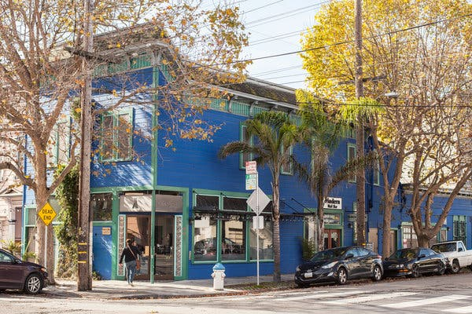

Dogpatch
Dogpatch is a vibrant, up-and-coming area nestled between Potrero Hill and the bay. Formerly a shipbuilding
hub dating back to the 1800s, this dockside area retains an industrial vibe with large warehouses, many of
which have been updated into residential lofts, art galleries and indie shops. Third Street offers a mix of
trendy restaurants, brunch cafes, brew pubs and wine bars, plus the Museum of Craft and Design.
Some places to go
-
Wine Lover
Pizza
Artsy
Bar
Ice Creme
Restaurant
DIG Wine Shop
Neighborhood wine store focuses primarily on French and Itlian labels from known and boutique marker
Some people may call it highly opinionated-point-of-view. The price range is fairly wide. However,
the quality is always high enough to make me put in my wine shop list. The owner is extremely knowledgable
in Frence and Itlay origin. If you are looking for something silky, fruit forward, light body(a.k.a. me),
you will have a good time here.


Long Bridge
Long Bridge pizza has been around Dogpatch neighborhood for 2 years. They have expended from one to two units.
It began as the vision of two childhood friends and Bay Area natives, Neal DeNardi and Andrew Markonlis.
Long Bridge pizza is named after the wooden causeway that once connected downtown SF to Dogpatch in the
late 1800s. Our goal is to create a laid back vibe for everyone to enjoy some serious pizza in the neighborhood.
Long Bridge specializes in thin-crust sourdough pizzas. The dough is naturally leavened with organic flour.
We source the highest quality ingredients. Using influences from classic East Coast, Italian, and San Francisco
styles, our pizzas provide something for everyone. Stop by before 4pm for sandwiches that are as equally inspired.


Workshop Resdence
Located in the Dogpatch neighborhood of San Francisco, Workshop Residence engages the worlds of craft, art,
and design. We collaborate with artists and designers, supporting materials exploration, design, and fabrication.
Together, we partner with local manufacturers to create functional objects for everyday living. We work with
emerging and established artists and designers from all over the world, inviting our collaborators to share
about their projects through workshops, talks, and events.

Ungrafted
Chris and Rebecca met at a wine exam in 2012. They went on dates where they enjoyed a lot of food and wine,
and discussed opening a restaurant “one day.” In that time, they rose to the top of the wine industry,
got married, and had a daughter. Providing a fantastic guest experience is the foundation of their lives,
and it is this devotion to the hospitality field that makes them so well-known and liked by their peers
and guests. They are excited to settle into San Francisco’s Dogpatch and become part of the fabric of that community.


Mr. and Mrs. Miscellaneous
<The problem with opening an ice cream parlor is that you’re always in competition—with neighboring scoop shops,
of course, but also with an even fiercer adversary: nostalgia. Mr. and Mrs. Miscellaneous is own by Ian Flores
and Annabelle Topacio. Their hour is supper short but high traffic in every week which is really smart way to
keep the customers. There is never a permanent flvor. They roate the them every week. My favor is Thai Basil Chip.
Classic vanilla base with Thai Basil aroma top with 70% dark chocolate chip. Blending with finsihed sae salt creates
a nice creamy, balanced, and unique type of dessert.

Piccino
Piccino is a SF local litalian restaurant that located in Dogpatch. Their grant opening was in December 2006.
They have been around for a while. AT first they weren't plan to be a brick and mortar resaurant, but there
are always people says: “you should open up a restaurant.So, here they are. They also parntner up with Sightglass
3 wave speciality coffee Shop and opend up their own coffee shop next door. However, I'll say their coffee is
drinkable. What makes them sucessful is their small quantity theory. When things get big and cooperate, it may
lost some kind of craft beauty. Piccino has always carry that kind of italian, delicate, but friendly vibe.
So, go visit!!